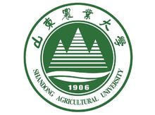

山东农业大学
校训：登高必自
校徽
山东农业大学（Shandong Agricultural University）坐落于山东省泰安市，是一所拥有百年历史的山东省属重点大学，学校前身是1906年（清光绪32年）创办于济南的山东高等农业学堂。1983年9月，经教育部批准，山东农学院更名为山东农业大学。


山东农业大学（Shandong Agricultural University）坐落于山东省泰安市，是一所拥有百年历史的山东省属重点大学，学校前身是1906年（清光绪32年）创办于济南的山东高等农业学堂。1983年9月，经教育部批准，山东农学院更名为山东农业大学。
富平县隶属于陕西省渭南市，位于陕西省中部，关中平原和陕北高原的过渡地带。富平老城是一座历史古城，也是全国少有[5] 的斩城（形似刀劈的土丘低塬，城建其上，故称斩城），建于元末明初的富平老县城，位于富平县政府西北1公里处的杜村镇莲湖村。北临温泉河，东临新县城，西临连城，南临西禹公路。老城是中山塬的余脉，中高四周低的土丘低塬，为不规则长方形，长520米，宽350米，占地约280多亩。原有东、西、南、北四门，城墙高而坚，城的结构和北京的皇城和西安城有相同之处，守楼分布其周围。元、明、清、民国到解放，这里一直是富平的政治、经济、文化中心。1970年，富平县委、县政府及县级机关单位陆续从老县城搬迁到新城区，政治、经济、文化的活动中心也随之转移。县城内主要古建筑有文庙、城隍庙、关帝庙、望湖楼、图书楼、魁星楼等。 富平县是现任中共中央总书记、中国国家主席、中央军委主席习近平的故乡和原国务院副总理、第五届全国人大常委会副委员长、伟大的无产阶级革命领导人习仲勋故里。